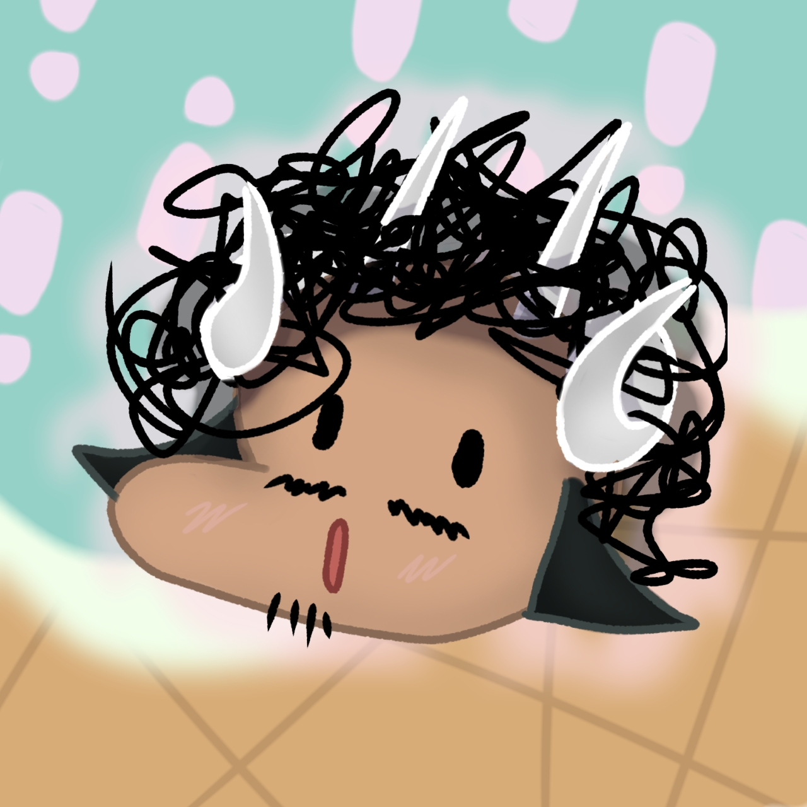
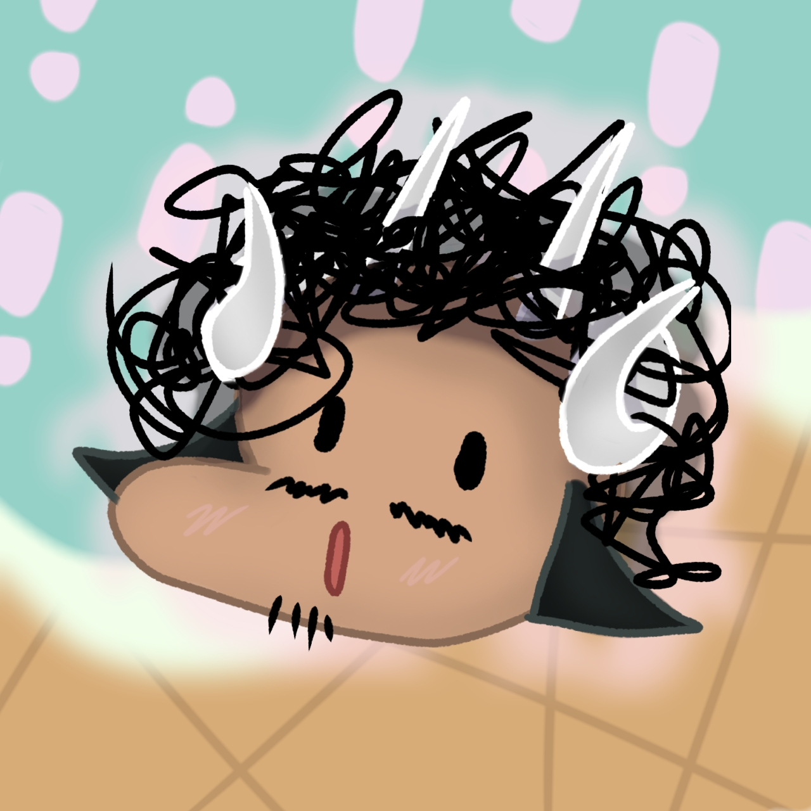

Carnet de croquis & dessins
Si je devais me définir par une action, ce serait le dessin. Depuis assez jeunes, je dessine, de tout et n’importe quoi, et au fur et à mesures des années, j’ai accumulé de l’expérience dans cette discipline.
Pendant ma formation en BUT MMI, la notion de carnet de croquis m’a instantanément enchanté. Même si le travail demandé dans ce carnet est légèrement différent de l’idée que l’on peut avoir, j’ai quand même laissé ma créativité dans son élan de production.
A l’aide du dessin, j’ai appris à poser mes idées de manière graphique, à les représenter sous différents angles. Mais avec le carnet de croquis, j’ai appris à « Réfléchir » dans mon carnet, c’est-à-dire à poser mes idées et concepts, faire des essais pour la conception de visuels, représenter mes idées.


 

Logiciels utilisés

Compétences employées
- Dessin : Papiers et Crayons
- Dessin : Appareil numérique
- Réfléxion